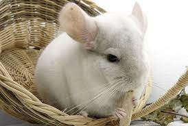

Sobre as Chinchilas
As chinchilas são pequenos roedores nativos da região dos Andes, na América do Sul. Com sua pelagem macia e densa, são famosas por serem criaturas de aparência adorável. A biologia desses animais é fascinante. Chinchilas têm adaptações únicas que as ajudam a sobreviver em seu ambiente montanhoso. Sua pelagem é a característica mais notável, composta por cerca de 60 pelos por folículo, o que lhes confere uma pelagem incrivelmente densa e macia. Esse revestimento denso atua como isolante térmico, protegendo-as das temperaturas extremas nas montanhas. São animais noturnos e herbívoros, se alimentando principalmente de gramíneas, folhas e cascas de árvores. Possuem dentes em crescimento contínuo, o que requer um desgaste constante para evitar problemas odontológicos. Reproduzem-se de forma bastante lenta, com gestações que duram aproximadamente 111 dias, resultando em ninhadas pequenas. Isso, juntamente com a caça excessiva no passado devido à demanda por sua valiosa pele, levou a uma redução drástica de suas populações na natureza. Em cativeiro, as chinchilas se tornaram populares como animais de estimação devido à sua pelagem única e amigável comportamento, embora sejam sensíveis a temperaturas elevadas e necessitem de cuidados específicos. Portanto, a criação responsável e a conservação das chinchilas selvagens são essenciais para garantir a sobrevivência dessa espécie tão cativante.
.jpg)
Cuidados e Alimentação
Cuidar de uma chinchila requer atenção e responsabilidade, pois são animais sensíveis e únicos. Aqui estão alguns cuidados essenciais a serem considerados: 1. *Ambiente e Alojamento*: Forneça uma gaiola espaçosa e bem ventilada, preferencialmente em metal, com prateleiras para que ela possa pular e escalar. Evite gaiolas de plástico, pois podem roer e ingerir o material. 2. *Alimentação*: Chinchilas são herbívoras, então forneça feno de qualidade, pellets específicos para chinchilas e ocasionalmente pequenas porções de frutas e vegetais frescos. Certifique-se de que tenham acesso constante a água limpa. 3. *Higiene*: Mantenha a gaiola limpa, removendo fezes e restos de alimentos diariamente. Chinchilas também tomam banhos de poeira para manter sua pelagem limpa e saudável. Forneça uma caixa de banho com poeira de sílica. 4. *Temperatura*: Chinchilas são sensíveis ao calor. Mantenha a temperatura da gaiola entre 15°C e 25°C e evite exposição direta à luz solar. 5. *Atenção Veterinária*: Leve sua chinchila a um veterinário especializado regularmente para exames de rotina e cuidados de saúde. 6. *Companhia*: Chinchilas são animais sociais e geralmente se sentem mais felizes quando têm companhia de outros chinchilas. Certifique-se de que a interação seja supervisionada para evitar brigas. 7. *Manuseio*: Se você deseja manusear sua chinchila, faça-o com cuidado e gentileza. Eles têm ossos frágeis, então evite quedas ou apertos bruscos. 8. *Materiais Roedores*: Forneça brinquedos e materiais para roer, pois os dentes das chinchilas crescem continuamente. Isso ajuda a manter seus dentes desgastados. Ao seguir esses cuidados e estar atento ao bem-estar de sua chinchila, você garantirá que ela viva uma vida saudável e feliz como seu animal de estimação
.jpg)
Galeria de Fotos
Explore nossa galeria de fotos e apaixone-se pelas chinchilas.
